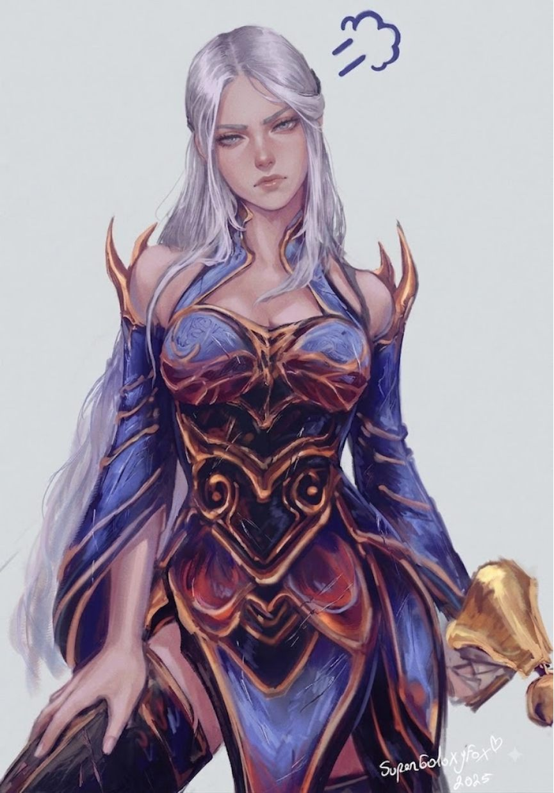
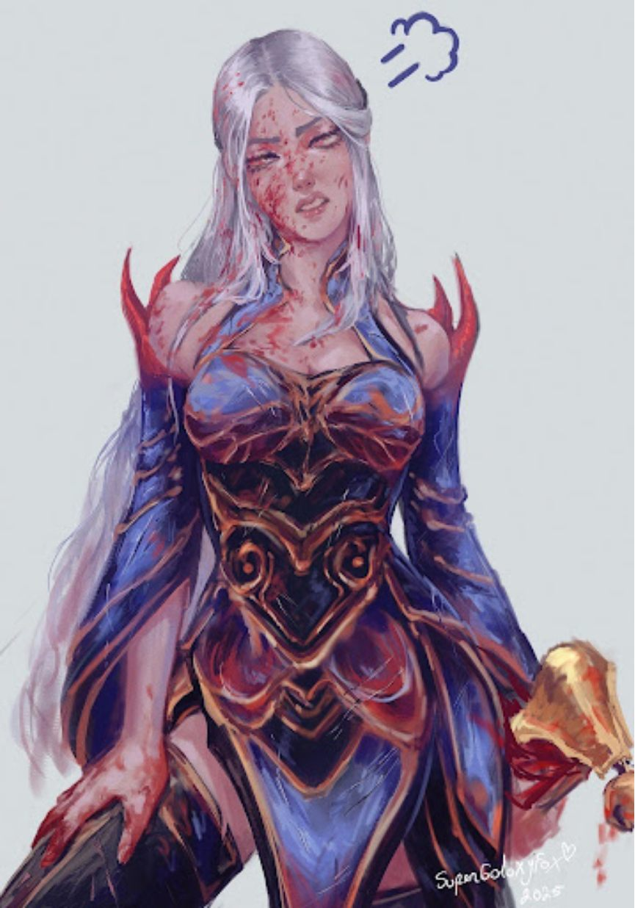
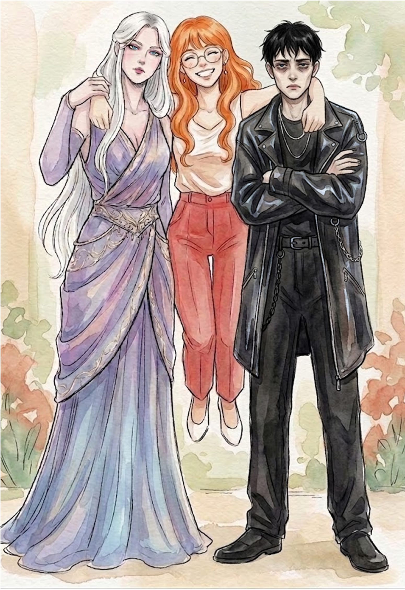
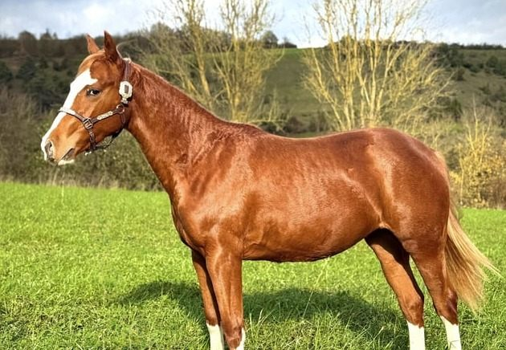
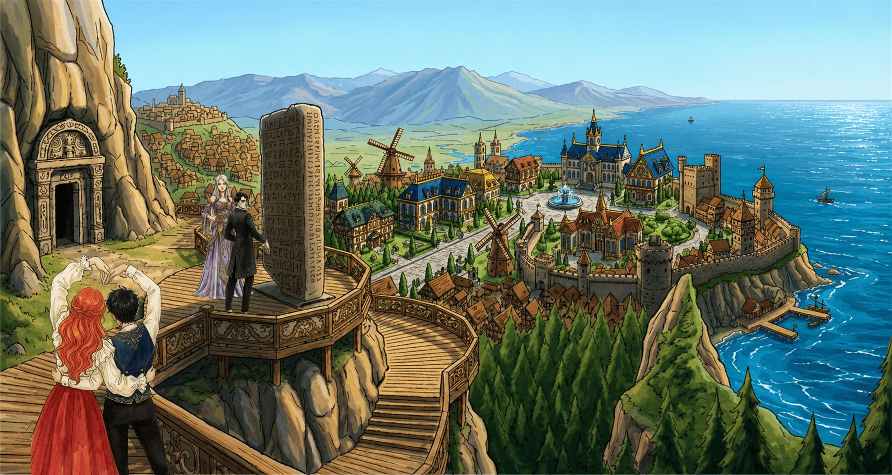

<meta charset="utf-8">
<title>Crystal Taelin</title>
<link rel="preconnect" href="https://fonts.googleapis.com">
<link rel="preconnect" href="https://fonts.gstatic.com" crossorigin>
<link rel="stylesheet" href="https://fonts.googleapis.com/css2?family=Cormorant+Garamond:ital,wght@0,500;0,600;0,700;1,500;1,600&family=Marcellus+SC&family=Spectral:ital,wght@0,400;0,500;1,400&display=swap">
<link rel="stylesheet" href="style.css">
<style>
  /* ---------- kahraman ---------- */
  .hero { padding-block: clamp(2.5rem, 6vw, 4.5rem) clamp(3rem, 6vw, 4.5rem); }
  .hero .wrap { display: grid; grid-template-columns: minmax(0, 1.15fr) minmax(0, .85fr); gap: clamp(2rem, 5vw, 4rem); align-items: center; }
  .hero-text { display: grid; gap: 1.4rem; min-width: 0; }
  .name {
    font-size: clamp(3.6rem, 10vw, 7.2rem); line-height: .86; letter-spacing: -.01em; font-weight: 600;
  }
  .name span { display: block; font-style: italic; font-weight: 500; color: var(--violet); padding-left: .55em; }
  .threat {
    font-family: var(--f-display); font-style: italic; font-size: clamp(1.25rem, 2.4vw, 1.55rem); line-height: 1.3;
    max-width: 30rem; border-left: 2px solid var(--ember); padding-left: 1rem; color: var(--ink);
  }
  .threat small { display: block; margin-top: .4rem; font-family: var(--f-label); font-style: normal; font-size: .72rem; letter-spacing: .14em; color: var(--muted); }
  .stats { display: grid; grid-template-columns: repeat(auto-fit, minmax(7.5rem, 1fr)); gap: 0; border-block: 1px solid var(--line); }
  .stats div { padding: .8rem .2rem; display: grid; gap: .1rem; }
  .stats dt { font-family: var(--f-label); font-size: .7rem; letter-spacing: .14em; color: var(--muted); }
  .stats dd { margin: 0; font-family: var(--f-display); font-size: 1.35rem; font-weight: 600; font-variant-numeric: tabular-nums; }

  .portrait { margin: 0; display: grid; gap: .8rem; min-width: 0; }
  .frame {
    position: relative; aspect-ratio: 865 / 1236; max-width: 100%; border-radius: 220px 220px 6px 6px; overflow: hidden;
    border: 1px solid color-mix(in srgb, var(--gold) 55%, transparent);
    box-shadow: 0 0 0 6px var(--bg), 0 0 0 7px color-mix(in srgb, var(--gold) 35%, transparent);
    background: var(--violet-soft);
  }
  .frame img { position: absolute; inset: 0; width: 100%; height: 100%; object-fit: cover; transition: opacity .5s ease; }
  .frame img.after { opacity: 0; }
  .frame[data-mode="after"] img.after { opacity: 1; }
  .frame[data-mode="after"] img.before { opacity: 0; }
  .toggle { display: flex; gap: .4rem; justify-content: center; }
  .toggle button {
    font: inherit; font-family: var(--f-label); font-size: .78rem; letter-spacing: .1em; cursor: pointer;
    padding: .4rem .9rem; border-radius: 999px; border: 1px solid var(--line); background: transparent; color: var(--muted);
  }
  .toggle button[aria-pressed="true"] { background: var(--violet); border-color: var(--violet); color: var(--bg); }
  .portrait figcaption { text-align: center; font-size: .82rem; color: var(--muted); }

  /* ---------- zaman çizelgesi ---------- */
  .ages { display: grid; gap: 0; }
  .age { display: grid; grid-template-columns: 6.5rem minmax(0, 1fr); gap: 1.5rem; padding-block: 1.4rem; border-top: 1px solid var(--line); }
  .age:first-child { border-top: 0; }
  .age-n { font-family: var(--f-display); font-size: 3rem; line-height: .9; font-weight: 600; color: var(--violet); font-variant-numeric: tabular-nums; }
  .age-n small { display: block; font-family: var(--f-label); font-size: .7rem; letter-spacing: .14em; color: var(--muted); margin-top: .35rem; }
  .age h3 { margin-bottom: .45rem; }
  .age p { max-width: var(--text); }
  .age.now .age-n { color: var(--ember); }

  /* ---------- kişilik ---------- */
  .mask { display: grid; grid-template-columns: repeat(2, minmax(0, 1fr)); gap: 0; border: 1px solid var(--line); border-radius: 6px; overflow: hidden; }
  .mask > div { padding: clamp(1.3rem, 3vw, 2rem); display: grid; gap: 1rem; align-content: start; }
  .mask > div + div { background: var(--surface); border-left: 1px solid var(--line); }
  .mask ul { margin: 0; padding: 0; list-style: none; display: grid; gap: .7rem; }
  .mask li { padding-left: 1.2rem; position: relative; }
  .mask li::before { content: ""; position: absolute; left: 0; top: .72em; width: .45rem; height: .45rem; transform: rotate(45deg); background: var(--gold); }
  .mask > div + div li::before { background: var(--violet); }

  .fear {
    margin-top: 2rem; display: grid; grid-template-columns: auto minmax(0, 1fr); gap: 1.5rem; align-items: center;
    padding: 1.6rem clamp(1.2rem, 3vw, 2rem); border-radius: 6px; background: var(--ink); color: var(--bg);
  }
  .fear .eyebrow { color: var(--gold); }
  .fear q { font-family: var(--f-display); font-size: clamp(1.6rem, 3.4vw, 2.3rem); font-style: italic; line-height: 1.15; quotes: none; display: block; margin-top: .3rem; }
  .fear svg { width: 56px; height: 56px; color: var(--ember); }
  .flaws { margin-top: 2rem; display: flex; flex-wrap: wrap; gap: .5rem; }

  /* ---------- yetenekler ---------- */
  .power { display: grid; grid-template-columns: minmax(0, 1fr) minmax(0, 1fr); gap: clamp(1.5rem, 4vw, 3rem); align-items: center; }
  .skills { display: grid; gap: 1rem; }
  .skill { border: 1px solid var(--line); border-radius: 6px; padding: 1.3rem 1.4rem; display: grid; gap: .6rem; background: var(--surface); }
  .skill h3 { font-family: var(--f-label); font-size: 1.05rem; letter-spacing: .06em; line-height: 1.3; color: var(--ember); }
  .skill .meta { display: flex; justify-content: space-between; align-items: center; gap: .8rem; flex-wrap: wrap; }
  .pip {
    font: inherit; font-family: var(--f-label); font-size: .74rem; letter-spacing: .1em; cursor: pointer;
    display: inline-flex; align-items: center; gap: .45rem; padding: .3rem .75rem; border-radius: 999px;
    border: 1px solid var(--ember); background: transparent; color: var(--ember);
  }
  .pip i { width: .65rem; height: .65rem; border-radius: 50%; background: var(--ember); display: inline-block; }
  .pip[aria-pressed="true"] { border-color: var(--line); color: var(--muted); }
  .pip[aria-pressed="true"] i { background: transparent; border: 1px solid var(--muted); }

  /* ---------- kardeşler ---------- */
  .siblings { display: grid; grid-template-columns: minmax(0, .8fr) minmax(0, 1.2fr); gap: clamp(1.5rem, 4vw, 3rem); align-items: start; }
  .siblings figure { margin: 0; display: grid; gap: .6rem; }
  .siblings figure img { border-radius: 6px; border: 1px solid var(--line); }
  .siblings figcaption { font-size: .85rem; color: var(--muted); }
  .sib-list { display: grid; gap: 0; }
  .sib { display: grid; gap: .45rem; padding-block: 1.2rem; border-top: 1px solid var(--line); }
  .sib:first-child { border-top: 0; padding-top: 0; }
  .sib header { display: flex; align-items: baseline; gap: .7rem; flex-wrap: wrap; }
  .sib h3 { font-size: 1.8rem; }
  .sib .sees { font-family: var(--f-display); font-style: italic; font-size: 1.2rem; color: var(--violet); }
  .sib.gone h3 { color: var(--dead); text-decoration: line-through; text-decoration-thickness: 1px; }

  /* ---------- çevre ---------- */
  .circle { display: grid; grid-template-columns: repeat(3, minmax(0, 1fr)); gap: 1rem; }
  .person { border-top: 2px solid var(--line); padding-top: 1rem; display: grid; gap: .45rem; align-content: start; }
  .person.heart { border-top-color: var(--ember); }
  .person.bad { border-top-color: var(--ink); }
  .person h3 { font-size: 1.45rem; }
  .person p { font-size: .97rem; }

  .horse { display: grid; grid-template-columns: minmax(0, 1fr) minmax(0, 1fr); gap: clamp(1.5rem, 4vw, 3rem); align-items: center; }
  .horse img { border-radius: 6px; border: 1px solid var(--line); }
  .eyes { display: inline-flex; gap: .3rem; vertical-align: middle; margin-left: .3rem; }
  .eyes i { width: .8rem; height: .8rem; border-radius: 50%; display: inline-block; border: 1px solid var(--line); }

  /* ---------- sözler ---------- */
  .quotes { display: grid; grid-template-columns: repeat(2, minmax(0, 1fr)); gap: 0; border-top: 1px solid var(--line); }
  .quotes blockquote { margin: 0; padding: 1.6rem 1.6rem 1.6rem 0; display: grid; gap: .6rem; border-bottom: 1px solid var(--line); }
  .quotes blockquote:nth-child(even) { padding-left: 1.6rem; border-left: 1px solid var(--line); }
  .quotes p { font-family: var(--f-display); font-size: 1.45rem; line-height: 1.25; font-style: italic; }
  .quotes cite { font-style: normal; font-family: var(--f-label); font-size: .72rem; letter-spacing: .14em; color: var(--muted); }

  /* ---------- bölümlere çağrı ---------- */
  .to-chapters { display: grid; grid-template-columns: minmax(0, 1fr) auto; gap: 2rem; align-items: center; }
  .to-chapters img { border-radius: 6px; border: 1px solid var(--line); aspect-ratio: 16 / 7; object-fit: cover; max-width: 100%; grid-column: 1 / -1; }

  @media (max-width: 820px) {
    .hero .wrap, .power, .siblings, .horse { grid-template-columns: minmax(0, 1fr); }
    .portrait { max-width: 22rem; justify-self: center; width: 100%; }
    .circle { grid-template-columns: minmax(0, 1fr); }
    .quotes { grid-template-columns: minmax(0, 1fr); }
    .quotes blockquote, .quotes blockquote:nth-child(even) { padding: 1.4rem 0; border-left: 0; }
  }
  @media (max-width: 640px) {
    .mask { grid-template-columns: minmax(0, 1fr); }
    .mask > div + div { border-left: 0; border-top: 1px solid var(--line); }
    .age { grid-template-columns: 4.2rem minmax(0, 1fr); gap: 1rem; }
    .age-n { font-size: 2.3rem; }
    .fear { grid-template-columns: minmax(0, 1fr); }
    .to-chapters { grid-template-columns: minmax(0, 1fr); }
  }
</style>

<svg width="0" height="0" style="position:absolute" aria-hidden="true">
  <symbol id="sun" viewBox="0 0 32 32"><g fill="none" stroke="currentColor" stroke-width="1.4"><circle cx="16" cy="16" r="6.5"/><path d="M16 2v6M16 24v6M2 16h6M24 16h6M6.1 6.1l4.2 4.2M21.7 21.7l4.2 4.2M6.1 25.9l4.2-4.2M21.7 10.3l4.2-4.2"/></g><path d="M17.5 10.2a6 6 0 1 1 0 11.6 5 5 0 0 0 0-11.6z" fill="currentColor"/></symbol>
  <symbol id="huff" viewBox="0 0 32 32"><g fill="none" stroke="currentColor" stroke-width="2.2" stroke-linecap="round"><path d="M13 9a5 5 0 0 1 9.4-1.6 4.5 4.5 0 0 1 4.6 7.4 4 4 0 0 1-4.5 5.4 4.6 4.6 0 0 1-7.8.4"/><path d="M4 16h8M6 21h6M8 11h4"/></g></symbol>
</svg>

<header class="bar">
  <div class="wrap">
    <a class="sigil" href="index.html"><svg aria-hidden="true"><use href="#sun"/></svg>TAELIN HANESİ</a>
    <nav aria-label="Sayfalar">
      <a href="../">← Bahçe</a>
      <a href="index.html" aria-current="page">Karakter</a>
      <a href="bolumler.html">Bölümler</a>
      <a href="tanidiklar.html">Tanıdıklar</a>
    </nav>
  </div>
</header>

<main>
  <section class="hero">
    <div class="wrap">
      <div class="hero-text">
        <p class="eyebrow">Vask · Polentus Krallığı · AH 2587</p>
        <h1 class="name">Crystal <span>Taelin</span></h1>
        <p class="lede">Taelin evinin en büyük çocuğu. Altı yaşından beri hem ablası hem annesi olduğu üç kardeşi, hizmetçiler ve loncanın bütün lojistiği onun elinde. Kimse sormadan herkesin işine karışır, kimse istemeden önlerine atlar.</p>
        <p class="threat">“Ben şimdi sana göstereyim; bu eller entelektüel eli mi, yoksa kodum mu oturturum eli mi!”<small>Teleferik Tepesi'ndeki haydutlara, Bölüm 1</small></p>
        <dl class="stats">
          <div><dt>Yaş</dt><dd>24</dd></div>
          <div><dt>Boy</dt><dd>1.75 m</dd></div>
          <div><dt>Enerji</dt><dd>Güç</dd></div>
          <div><dt>Atı</dt><dd>Warrior</dd></div>
        </dl>
      </div>
      <figure class="portrait">
        <div class="frame" id="frame" data-mode="before">
          
          
        </div>
        <div class="toggle" role="group" aria-label="Portre">
          <button type="button" id="pBefore" aria-pressed="true">Davet günü</button>
          <button type="button" id="pAfter" aria-pressed="false">Kavgadan sonra</button>
        </div>
        <figcaption>Çizim: SuperGalaxyFox, 2025</figcaption>
      </figure>
    </div>
  </section>

  <section class="block" id="hikaye">
    <div class="wrap">
      <div class="block-head">
        <p class="eyebrow">Geçmiş</p>
        <h2>Yeterince iyi bir çocuk olursa annesi iyileşecekti</h2>
      </div>
      <div class="ages">
        <article class="age">
          <div class="age-n">0<small>doğum</small></div>
          <div><h3>Taelinlerin ilk çocuğu</h3><p>Babası Elvar ve annesi Marcia. Küçük yaşta güç enerjisti olduğu anlaşıldı.</p></div>
        </article>
        <article class="age">
          <div class="age-n">2<small>Sylvia doğar</small></div>
          <div><h3>Bir kız kardeş</h3><p>Evdeki huzursuzluk bir çocuğun daha eklemesiyle belirginleşir.</p></div>
        </article>
        <article class="age">
          <div class="age-n">6<small>Epoch doğar, anne kapanır</small></div>
          <div><h3>Karanlık odanın sırdaşı</h3><p>Üçüncü çocuk sonrası annesi kahve ve sigara dumanı arasında kendisini odasına kapatır; kapalı kapılar ardında ağlayarak dertleştiği tek kişi Crystal'dır. Hizmetçiler artık altı yaşındaki bir kıza hesap verir. Kardeşlerinin bakımı, yaraları, korkuları onda.</p></div>
        </article>
        <article class="age">
          <div class="age-n">16<small>annenin ölümü</small></div>
          <div><h3>Bastırılan her şey dışarı taşar</h3><p>Marcia ateş kanserinden ölür. Ergenlikle birlikte Crystal daha agresif, laf anlamaz ve sinir bozucu birine dönüşür. Babasıyla şiddetli kavgalar eder, dayak arsızı olur.</p></div>
        </article>
        <article class="age">
          <div class="age-n">16+<small>“düzeltirim”</small></div>
          <div><h3>Yanlış insanlar</h3><p>“Değerim ancak başkalarına hizmet ettiğim kadar” inancı onu hep düzeltebileceğine inandığı kötü adamlara götürür. Bazıları ona ve ailesine musallat olur. Babasının ayarladığı düzgün ve nüfuzlu taliplerin hepsini sırf ondan geldiği için geri çevirir.</p></div>
        </article>
        <article class="age now">
          <div class="age-n">24<small>şimdi</small></div>
          <div><h3>Lonca, koruma ve kaçış</h3><p>Evin yönetimi, hizmetçiler ve loncanın lojistiği onda. Kardeşlerini hâlâ kendi çocukları gibi görür, belalı eski sevgilileriyle uğraşırken bir yandan da onları babasının gölgesinden uzak tutmaya çalışır. Siyah çıkan saçlarını sırf asilik olsun diye beyaza kadar açar.</p></div>
        </article>
      </div>
    </div>
  </section>

  <section class="block" id="kisilik">
    <div class="wrap">
      <div class="block-head">
        <p class="eyebrow">Kişilik</p>
        <h2>Ketum, olgun, soğuk, sinirli.</h2>
      </div>
      <div class="mask">
        <div>
          <p class="eyebrow">Yansıttığı</p>
          <ul>
            <li>Kardeşlerine abla gibi değil, her işlerine burnunu sokan bir anne gibi davranır. Onlar buna “kendini beğenmişlik” der.</li>
            <li>Kardeşleri adına karar verir, onları çok iyi tanıdığını düşünür. “Ben yardım etmezsem bir boku beceremezler.”</li>
            <li>Dobra görünür ama söylediği her şey kendi bencil isteklerinden beslenir.</li>
            <li>Dediğim dediktir ama kardeşlerinin ısrarlarına dayanamaz.</li>
          </ul>
        </div>
        <div>
          <p class="eyebrow">Yansıtmadığı</p>
          <ul>
            <li>Mayın tarlası gibi bir evde büyüdü; ses tonuna, ortamdaki ufak değişikliğe karşı hep tetikte.</li>
            <li>Kötü giden her şeyin suçunu, yeterince iyi plan yapamadığı için kendinde bulur.</li>
            <li>Ağlamayı ve zayıflık göstermeyi lüks ve tehlike olarak görür. Acınmak istemez.</li>
            <li>Kendi değerini yaptığı işlerden biçer; ailesinin ihtiyacını hep kendinden önce koyar.</li>
            <li>Çocukluğunun kardeşleri için feda edildiğinin farkında ve bunu zaman zaman yüzlerine vurur.</li>
          </ul>
        </div>
      </div>
      <div class="fear">
        <svg aria-hidden="true"><use href="#huff"/></svg>
        <div>
          <p class="eyebrow">En büyük korkusu</p>
          <q>Kontrolü kaybedip babasına dönüşmek.</q>
        </div>
      </div>
      <div class="flaws" aria-label="Zaafları">
        <span class="tag ember">Otoriter olma bağımlısı</span>
        <span class="tag ember">Manipülasyona açık</span>
        <span class="tag">“I can fix him”</span>
        <span class="tag">Kardeşlerine çemkirmeyi sever</span>
        <span class="tag gold">Babasının adı bile sinirini bozar</span>
      </div>
    </div>
  </section>

  <section class="block" id="guc">
    <div class="wrap">
      <div class="block-head">
        <p class="eyebrow">Güç enerjisti</p>
        <h2>Ham büyüyü kas gücüne çevirir</h2>
      </div>
      <div class="power">
        <div class="prose" style="text-align: center;">
          <p>Enerjisi mor bir alev gibi kollarını sardığında normal bir insandan daha güçlü hale gelir.</p>
          <p>Enerjisi bacaklarında toplandığında insan üstü zıplayışlar yapabilir ya da tazı gibi hızlı koşabilir.</p>
          <p>Başka enerjileri çekebilir ve onları kullanabilir (tabi diğerleri izin verdiği sürece)</p>
        </div>
        <div class="skills">
          <article class="skill">
            <h3>SEN KİME ŞEKİL YAPIYON LAN</h3>
            <p>Kardeşlerine yapılan saldırının önüne geçer, onlara verilecek hasarı kendi üstüne alır.</p>
            <div class="meta">
              <span class="tag">Her savaş başı 1 kez</span>
              <button type="button" class="pip" id="useSkill" aria-pressed="false"><i></i><span>Hazır</span></button>
            </div>
          </article>
          <article class="skill">
            <h3>KARDEŞLERİMDEN UZAK DUR</h3>
            <p>Kardeşlerine saldırıldığında öfkeye kapılır, rage geçirir ve gücü buff alır.</p>
            <div class="meta"><span class="tag">Senaryoya göre</span></div>
          </article>
        </div>
      </div>
    </div>
  </section>

  <section class="block" id="kardesler">
    <div class="wrap">
      <div class="block-head">
        <p class="eyebrow">Taelin kardeşler</p>
        <h2>Onun çocukları</h2>
      </div>
      <div class="siblings">
        <figure>
          
          <figcaption>Crystal, Sylvia ve Epoch</figcaption>
        </figure>
        <div class="sib-list">
          <article class="sib">
            <header><h3>Sylvia</h3><span class="tag">22 · 1.50 m</span><span class="tag violet">Henüz gücü açılmadı</span></header>
            <p class="sees">Dünyanın karanlığından korunması gereken hayalperest küçük kız.</p>
            <p>Diplomatik, inek, senatoya girmeye çalışıyor. Ablasını “baskıcı, işine karışan abla” olarak görür. Crystal, anne ve babasının ilişkisini ondan saklayıp etkilenmemesini sağladı.</p>
          </article>
          <article class="sib">
            <header><h3>Ephraim “Epoch”</h3><span class="tag">18 · 1.69 m</span><span class="tag violet">Yıldız enerjisti</span></header>
            <p class="sees">Uzun yıllar yurtdışındaydı, tüm milliyetçi duygularını kaybetti</p>
            <p>Yurtdışında okudu, ailesine mesafeli. Paylaşmadığı görüleri ve gizli bağlantıları Crystal'ı deli eder; gece kapısını tekmeyle açtığı da oldu, alnından öptüğü de.</p>
          </article>
          <article class="sib gone">
            <header><h3>Riddley</h3><span class="tag">12</span><span class="tag ember">Hayatını kaybetti · Bölüm 8</span></header>
            <p class="sees">Dünyanın en şapşal, en çekilmez ama benim mükemmel küçük kerdeşim.</p>
            <p>Enerjist değildi. Pembe sincapla zengin olacağına inanıyordu, keşke hayat da onun kadar temiz olsaydı.</p>
          </article>
        </div>
      </div>
    </div>
  </section>

  <section class="block" id="warrior">
    <div class="wrap horse">
      
      <div class="prose">
        <p class="eyebrow">Mükemmel ötesi atı</p>
        <h2>Warrior</h2>
        <p>Kızıla çalan donu, örülmüş sarı yelesi ve kuyruğu var. Yüzündeki beyaz leke tek gözünü kapatır: bir gözü mavi, diğeri kahverengi<span class="eyes" aria-hidden="true"><i style="background:#7fb6e6"></i><i style="background:#7a4f2a"></i></span>.</p>
        <p>Doğduğunda çelimsiz, tüyleri dökülen bir taydı; seyisler “bu yaşamaz” demişti. Crystal'ın ellerinde büyüdü, bütün sürüye kafa tutar hale geldi. Adı bu yüzden Warrior. Crystal'a karşı bir kedi kadar uysal; yanına yabancı bir erkek yaklaştığında kulaklarını dikip ayaklarını yere vurur.</p>
      </div>
    </div>
  </section>

  <section class="block" id="sozler">
    <div class="wrap">
      <div class="block-head">
        <p class="eyebrow">Ağzından</p>
        <h2>Crystal'ca</h2>
      </div>
      <div class="quotes">
        <blockquote><p>“Erkeklerin her zaman niyeti vardır, ışık görsünler yeter.”</p><cite>Bölüm 1 · handa çay içerken</cite></blockquote>
        <blockquote><p>“Anneden aşağı kalır yanım yoktu!”</p><cite>Bölüm 2 · Sylvia'ya, at üstünde</cite></blockquote>
        <blockquote><p>“Ne tıklatacağım be kardeşimin kapısını?!”</p><cite>Bölüm 4 · Epoch'un odasına girerken</cite></blockquote>
        <blockquote><p>“Bana ne ulan Armest'inden de Mernos'undan da!”</p><cite>Bölüm 5 · sırtında Sylvia, kaçarken</cite></blockquote>
        <blockquote><p>“Oh be! Memleketimin tezeği! Valla özlemişim!”</p><cite>Bölüm 8 · Vask surlarına yaklaşırken</cite></blockquote>
        <blockquote><p>“Biz beklemeyi seven kadınlar değiliz.”</p><cite>Bölüm 7 · yetim Charlie'ye</cite></blockquote>
      </div>
    </div>
  </section>

  <section class="block" id="bolumlere">
    <div class="wrap to-chapters">
      <div class="prose">
        <p class="eyebrow">Hikâye</p>
        <h2>Hikâye devam ediyor!</h2>
        <p>Oyunda yaşananların tamamı, Crystal'ın anlatımıyla! Her oturumdan sonra yeni bir bölüm ekleniyor, kaçırmayın ;)</p>
      </div>
      <a class="btn" href="bolumler.html">Bölümleri oku →</a>
      
    </div>
  </section>
</main>

<footer class="foot">
  <div class="wrap">
    <span>Crystal Taelin · hikâye devam ediyor</span>
    <span><a href="index.html">Karakter</a> · <a href="bolumler.html">Bölümler</a> · <a href="tanidiklar.html">Tanıdıklar</a></span>
  </div>
</footer>

<script>
  (function () {
    var frame = document.getElementById('frame');
    var b = document.getElementById('pBefore'), a = document.getElementById('pAfter');
    function set(mode) {
      frame.dataset.mode = mode;
      b.setAttribute('aria-pressed', mode === 'before');
      a.setAttribute('aria-pressed', mode === 'after');
    }
    b.addEventListener('click', function () { set('before'); });
    a.addEventListener('click', function () { set('after'); });

    var pip = document.getElementById('useSkill');
    pip.addEventListener('click', function () {
      var used = pip.getAttribute('aria-pressed') !== 'true';
      pip.setAttribute('aria-pressed', used);
      pip.querySelector('span').textContent = used ? 'Bu savaş kullanıldı' : 'Hazır';
    });
  })();
</script>
